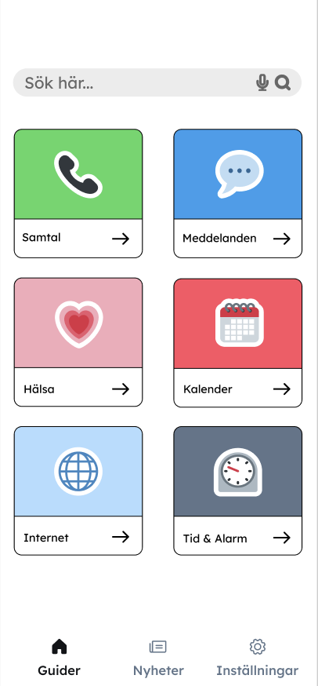
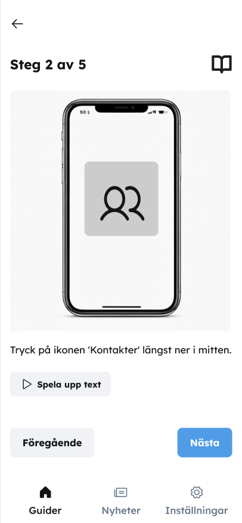
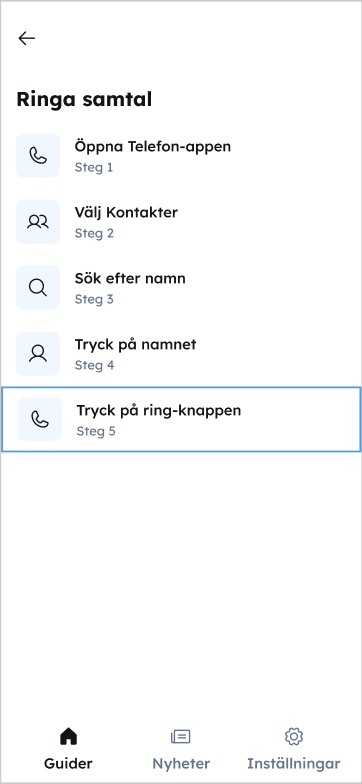

Mobilguiden är en app framtagen tillsammans med äldre användare, med målet att öka deras trygghet och självständighet när de använder sin mobiltelefon.
Under designprocessen blev det tydligt att många deltagare saknar överblick över vad som faktiskt är möjligt att göra med sin mobiltelefon. Genom deltagande designmetoder undersökte vi hur en app kunde hjälpa användare att utforska funktioner i sin egen takt – från samtal och meddelanden till hälsorelaterade funktioner.

Den här vyn visar olika guider organiserade i tydliga kategorier, exempelvis samtal, meddelanden och hälsa.
Syftet är att hjälpa användaren att utforska funktioner i sin egen takt och samtidigt skapa en tydligare förståelse för mobilens möjligheter.
Den här vyn visar hur en uppgift bryts ner i tydliga och hanterbara steg.
Varje guide består av flera moment där användaren följer instruktioner ett steg i taget. Genom att kräva ett aktivt val för att gå vidare skapas ett lugnare tempo, vilket minskar stress och ger användaren bättre kontroll över lärandet.
Designen bygger på insikter från användartester där deltagarna efterfrågade tydlig vägledning och mer tid att förstå varje moment.


Översiktsvyn ger användaren en tydlig bild av alla steg i guiden och gör det möjligt att navigera mellan dem.
Användaren kan hoppa fram och tillbaka mellan momenten för att repetera eller fördjupa sig i specifika delar. Denna flexibilitet gör att lärandet kan anpassas efter användarens egna behov och tempo.
Designen syftar till att skapa trygghet genom att alltid visa var i processen användaren befinner sig.
Projektet visade hur deltagande design kan omvandla användarnas faktiska hinder till konkreta designlösningar. Jag lärde mig särskilt vikten av att designa för trygghet, självständighet och användarens egna behov – samt att kontinuerlig användarfeedback är avgörande för att undvika att lösningen själv blir ett nytt hinder.